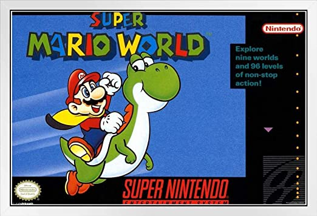

-
Portal 2

Un clásico moderno desarrollado por Valve, un videojuego secuela que expande mucho más las posibilidades de lo presentado en su primer entrega, acompáñanos a leer sobre qué tiene de especial este juego de puzzles.
- Leer más - -
The Legend of Zelda: Breath of the Wild

El primer juego de mundo-abierto en la saga de "The Legend of Zelda", ven y averigua porqué este juego se convirtió en un favorito de las masas de la noche a la mañana.
- Leer más - -
Super Mario World
El querido fontanero en su primer entrega de 16-bits, acercate a descubrir el como a pesar de los años, este juego de plataformas se solidificó como uno de los mejores de su tipo sin importar su edad.
- Leer más -